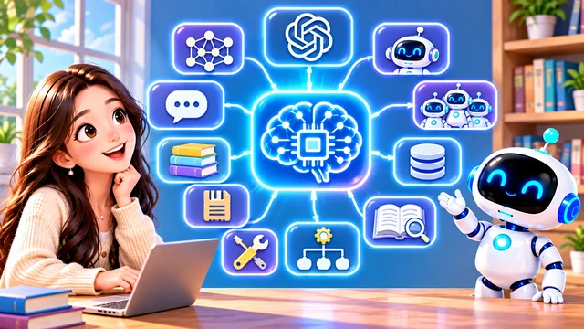

Welcome to Episode 7. Episodes 1–6 built the big picture—what AI is, how it learns, who makes it, where it hides or moves, and how it already shapes daily life. From here we start Phase 2: the basic vocabulary of how AI works.
Today we will not master every detail. We walk the whole map once so later episodes can zoom in. Every concept will come back—with classroom analogies you already know.
To make that easier, imagine AI as a student learning at school. What does that student need besides a brain?
Today’s lesson adds ten more ideas—prompt, context, knowledge, memory, skills, tools, workflow, RAG, agent, and multi-agent. Picture them as lockers, notebooks, and lab gear around that student, not as ten separate apps to download tonight.
What we already built
Episodes 1–6 were the foundation. This episode is the table of contents for everything that follows.
You already know that AI is not one app. You compared traditional and generative AI, traced how models learn, and met GPT-style large language models. You also saw ChatGPT, Gemini, 豆包, and DeepSeek as products—not as the whole field.
Along the way you also met machine learning, deep learning, large language models, and GPT—and you saw how invisible AI on screens can pair with visible AI in machines. None of that disappears; the map shows how new words connect to what you already know.
Episode 6 closed Phase 1—everyday AI in apps plus a six-part recap. Today’s map adds the vocabulary for Phase 2: what happens after you hand AI a task.
Phase 1 was the wide view; Phase 2 needs names for the pipeline—what you ask, what the system knows, what it keeps, and how steps chain together.
Brain, prompt, and context

Start with the AI Model. Think of it as the brain: software trained on data that can read, reason, and respond. Products like ChatGPT are doors; the model is what thinks behind them.
A brain still needs a question. A Prompt is that question—the instruction from the “teacher.” For example: “Compare these two fractions. Which is larger?” The prompt tells the AI what to do.
While it works, the AI also holds a scratch pad of what matters right now. That is Context—like short-term working memory or RAM. The current question, recent chat lines, and related facts in this moment all belong here.
Picture the model as the student, the prompt as today’s worksheet, and context as what is still on the desk from earlier in class—three pieces before knowledge, tools, or agents enter the story.
Put the three together: you write a prompt, the model reads it with whatever context is active, and an answer appears. Change the prompt or the context and the same brain can give a different result—just like a student with a new worksheet.
None of these three words mean “generative” or “traditional” by themselves. They describe how you talk to AI and what it sees this second—not which company built it.
Example: if you are discussing a math problem, the last few messages, the current question, and any numbers you pasted can all sit in Context. Swap to a new subject without that history and the model may answer as if the whiteboard was erased.
On the map, draw a line from you → prompt → model, with context looping beside that arrow. Most confusion later comes from mixing up those three stops.
Knowledge, memory, and skills
A student also carries years of classwork. AI vocabulary splits that into three related ideas.
Knowledge answers “What do you know?”—math facts, science ideas, history dates, language rules baked into training, like subjects you studied before the test.
Memory answers “What might we need again later?” It can store names, preferences, or facts from earlier chats when a product allows it. Context is the whiteboard for this problem; Memory is the binder you keep in your locker.
Skills are closer to “How do you do it?” Knowing what a triangle is belongs to knowledge; choosing steps to use the Pythagorean theorem is skill. For AI, skills can mean patterns the system learned for solving certain task types—not just listing facts.
Both context and memory sound like “remembering,” but they play different roles. Context holds what is on the desk for this task; memory holds what you filed away because a later assignment might need it again.
Tools, workflow, and RAG
Once the student knows the question and has facts in reach, the next pieces are gear and a plan.
Students use Tools: pencils, rulers, calculators, laptops. AI can call tools too—search the web, run code, read a file—when the product is built to allow it.
Hard problems need order. A Workflow is the recipe: step one gather facts, step two plan, step three check. Many homework rubrics are tiny workflows written by your teacher.
RAG stands for Retrieval-Augmented Generation (检索增强生成). Plain-language version: “I do not know yet—let me check the textbook or library, then answer.” The AI retrieves sources first, then writes with those facts in mind.
Workflow and RAG often show up together: look up notes, outline steps, draft the answer, then proofread. That is still one student—or one AI—following a recipe, not magic.
Agents and study groups
The last two labels describe AI that keeps working after the first reply—alone or in a team.
An Agent is like a student who can pursue a goal: understand the task, pick the next move, use tools, and keep going until something is finished—not only spit out one quick reply.
Multi-Agent systems split the work like a project team: one role hunts sources, another calculates, another polishes the final write-up. You will hear this term when several AIs coordinate on one big job.
Agents sit at the top of the map because they combine almost everything below: model, prompt, context, memory, skills, tools, workflow, and sometimes RAG.
In a multi-agent setup, roles mirror a study group: one classmate searches the textbook, one runs the numbers, one writes the clean final version. You stay the human who checks whether the group’s answer makes sense.
Your map for today
Feeling fuzzy? That is normal. We only pinned names to the map today. Starting next episode we unpack them one by one—still using school and homework as our compass.
Quick anchors: Model = brain · Prompt = teacher’s question · Context = short-term workspace · Knowledge = what you know · Memory = what to keep · Skills = how to do it · Tools = gear you use · Workflow = ordered steps · RAG = look up, then answer · Agent = self-directed helper · Multi-Agent = team of helpers.
If the labels feel tangled, that is expected today. We only name the towns on the map; starting Episode 8 we drive to each one slowly, still using school habits you already trust.
When a headline throws five new acronyms at you, pause and sort them: Is this about the brain, the question, what it remembers, the tools, or who is in charge? The map keeps you oriented.
Coming up next
Today we only met the map. Up next: a special on why we still study when AI looks so capable—then Episode 8 dives into Prompt in detail.